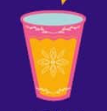
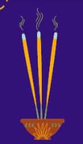
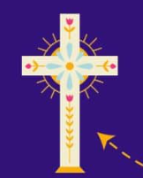
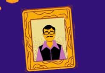
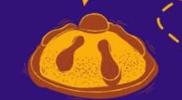
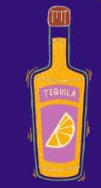
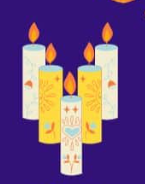

Altar de Muertos
El altar de muertos es una de las tradiciones más importantes de la cultura mexicana, creada para honrar y recordar a los seres queridos que han fallecido durante las festividades del Día de Muertos entre el 1 y el 2 de noviembre. Se concibe como un portal místico y un espacio sagrado de reencuentro donde las almas de los difuntos regresan del más allá para convivir con los vivos, siendo guiados por los aromas del copal y las flores de cempasúchil, y alumbrados por la luz de las velas. Este rito fusiona las antiguas cosmovisiones prehispánicas de devoción a los antepasados con las costumbres católicas traídas por los españoles. En la estructura del altar, que suele organizarse en varios niveles que representan los estratos de la existencia o el camino al descanso eterno, se colocan de forma armónica los retratos de los familiares difuntos junto a ofrendas que incluyen sus platillos, dulces y bebidas favoritos en vida, además de elementos simbólicos esenciales como el agua para mitigar la sed de su largo viaje, la sal para la purificación del alma y el pan de muerto.
Elementos Altar de Muertos

Copal

Cruz
Flores de cempasúchil

Foto del difunto
Comida favorita del difunto

Pan de muerto
Sal

Licor
